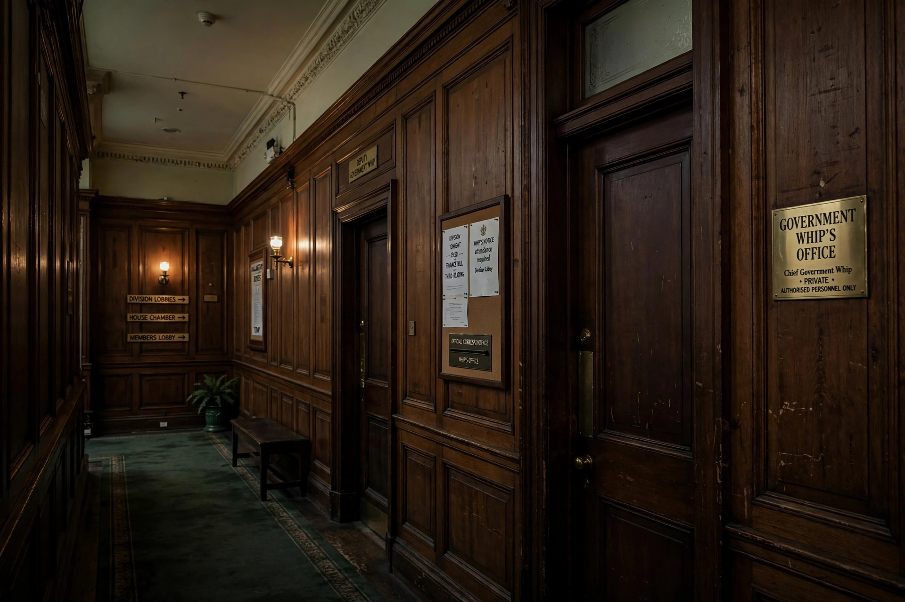

Chief Whip
| Chief Whip | |
|---|---|
| Role | Party official in a legislature |
| Function | Enforcing party discipline; organising votes |
| Systems | Westminster and other legislatures |
The Chief Whip is a political leader whose task is to enforce the whipping system, which aims to ensure that legislators who are members of a political party attend and vote as the party leadership desires. The chief whip leads a team of whips within each party in a legislature.
The term "whip" derives from the "whipper-in" of fox hunting, who kept the hounds from straying from the pack.

Functions
The chief whip's principal duties include:
- Communicating the party's voting instructions (the "whip") to members
- Ensuring members attend important divisions
- Counting expected votes and warning the leadership of potential defeats
- Acting as a channel of communication between backbenchers and the leadership, reporting grievances and morale
- Arranging "pairing" agreements allowing absent members to offset one another
In the United Kingdom
In the United Kingdom, the Government Chief Whip in the House of Commons is usually a senior figure who attends Cabinet and holds the formal title of Parliamentary Secretary to the Treasury. The whips' office is known for its discipline and for keeping detailed knowledge of members' views and personal circumstances.
Votes are graded by underlining on the written whip: a three-line whip denotes a crucial vote at which attendance is compulsory and rebellion may result in the whip being withdrawn — the member is suspended from the parliamentary party. Occasionally a free vote is announced, on which whips give no instruction.
In the United States
Both parties in the United States Senate and House of Representatives elect whips. The House Majority Whip is the third-ranking member of the majority party leadership, after the Speaker and Majority Leader. American whips count votes and persuade members, but have fewer sanctions than their Westminster counterparts because of weaker party discipline.
See also
Categories: Parliamentary procedure | Political party leadership | Westminster system